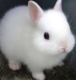

<!DOCTYPE html>
<html lang="ko-KR">
<head>
    <meta charset="UTF-8">
    <meta http-equiv="X-UA-Compatible" content="IE=edge">
    <meta name="viewport" content="width=device-width, initial-scale=1.0">
    <title>img</title>
</head>
<body>
    <!--  -->

    <!--  -->

    <!--  -->

    <picture>
        <source srcset="./images/rabbit_500.png" media="(min-width:960px)">
        <source srcset="./images/rabbit_150.png" media="(min-width:620px)">
        
    </picture>

    <!-- 점진적 향상기법
기본적으로 예전 기술 환경에서 동작할 수 있는 기능을 구현해두고, 최신 기술을 사용할 수 있는 환경에서는 최신 기술을 제공하여 더 나은 사용자 경험을 제공할 수 있는 방법입니다. -->

    <!-- 이미지 파일은 50kb 이하로 사용하기 권장 -->
</body>
</html>